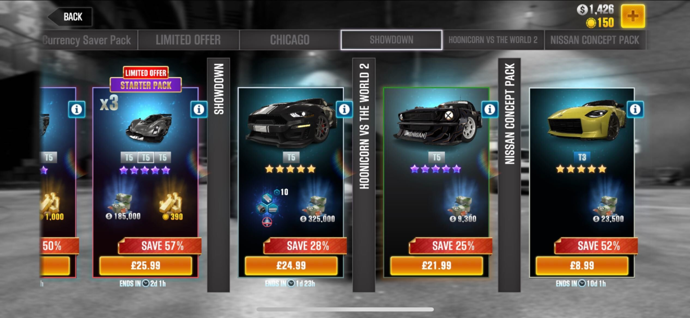
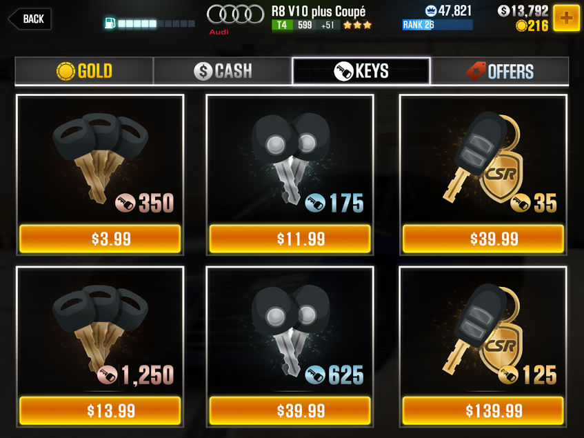
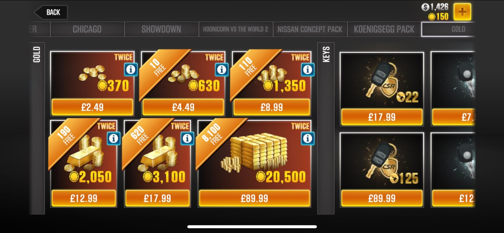
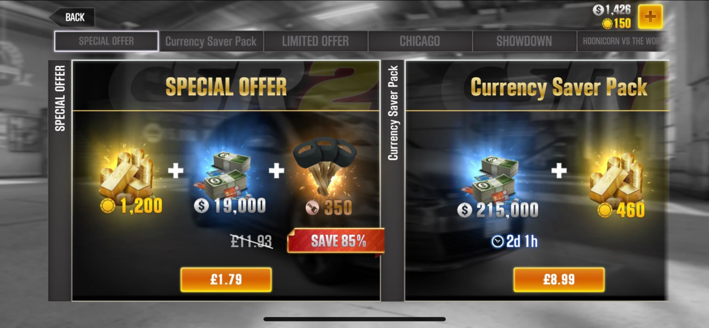
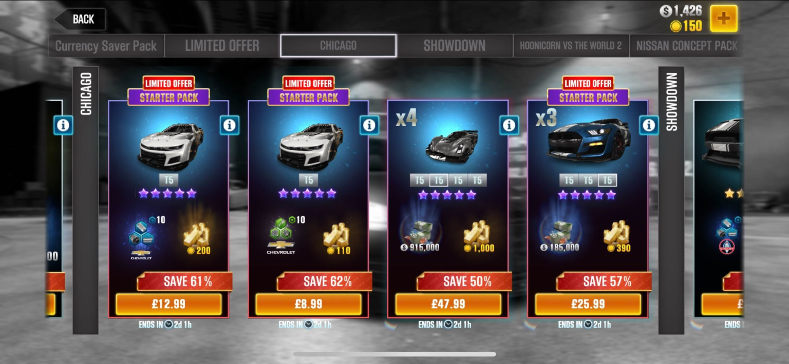

// Case study · Full Stack Improvement
I helped transform CSR2's Store from a fixed collection of slots into a scalable, dynamic Store where offers could be introduced, removed and reordered according to running events, timing, special offers and LiveOps requirements.

01 / Overview
CSR Racing 2's Store was a key part of the game's economy, providing players with access to Gold, Cash, Keys, bundles and promotional offers.
As the game's LiveOps strategy evolved, the Store itself became a constraint. The original experience was based around a largely fixed collection of on-screen promotional slots. This worked when the number of offers was relatively small, but increasingly limited the ability to introduce new promotions, react to events and run multiple offers simultaneously.
Around 2020, I pushed the UX and design direction towards a scrollable Store experience. This changed the Store from a fixed collection of promotional slots into a scalable content system capable of supporting a much larger and more dynamic range of offers.
Instead of designing around how many offers could fit on the screen, we could design around how many offers the LiveOps strategy needed.
02 / The challenge
The original Store was effectively constrained by the physical layout of the screen. Offers occupied a finite number of predefined positions, meaning the Store had a practical limit to the amount of promotional content it could display at any one time.
This created a growing problem as CSR2 expanded its economy and LiveOps programme. The problem wasn't simply that the Store was becoming visually crowded — the underlying content model was becoming restrictive.
A fixed Store meant that adding a new promotion could require another offer to be removed or displaced. This created a tension between two systems: the UI wanted a fixed number of items, while LiveOps wanted a flexible number of items.
As the number of campaigns and events increased, the Store needed to become more responsive to the game's changing promotional schedule.

The original fixed Store layout, where promotional capacity was tied to the number of predefined slots on screen.
03 / The two systems
The original approach treated the Store primarily as a collection of predefined UI positions. The number of available promotional positions effectively determined the amount of content that could be surfaced.
This worked well for a relatively stable economy. It became increasingly problematic for a LiveOps-driven game.
┌──────────────────────┐
│ OFFER 01 │
├──────────┬───────────┤
│ OFFER 02 │ OFFER 03 │
├──────────┼───────────┤
│ OFFER 04 │ OFFER 05 │
└──────────┴───────────┘
FIXED SLOTS
The new approach separated the viewport from the amount of available content. The screen remained a controlled viewport, but the Store itself could now contain significantly more promotional content.
This seemingly simple UX change had a much larger systems-level impact.
┌──────────────────────┐
│ OFFER 01 │
├──────────────────────┤
│ OFFER 02 │
├──────────────────────┤
│ OFFER 03 │
├──────────────────────┤
│ OFFER 04 │
├──────────────────────┤
│ OFFER 05 │
├──────────────────────┤
│ OFFER 06 │
└──────────────────────┘
↓
SCROLL
↓
SCROLL
04 / Technical approach
Stop treating each promotional offer as something that required a permanent position. Offers became individual content modules.
A horizontal scrolling Store with a top tab system, allowed the number of promotional items to grow without requiring a redesign of the screen.
Dynamically populating prefab asset holders were created to house pre-existing bundle and purchase content on demand.
Offers could be introduced, removed, reordered, time-limited, tied to events or replaced by new promotions.
The Store hierarchy could change according to the current promotional strategy, reflecting what matters now.

Currency and keys surfaced as individual offer modules.

Starter packs treated as reorderable content modules.
05 / UX breakdown
The Store was no longer constrained by a small number of fixed promotional positions. More offers could be supported without redesigning the fundamental screen.
The content could change according to the needs of the game. New promotions didn't necessarily require a new UI structure.
The Store could better support the cadence of events, campaigns and limited-time promotions as CSR2's LiveOps programme grew.
Scrolling provided a natural way to explore a larger collection of offers. The first screen could focus on the most important promotions while additional content remained discoverable below.
06 / Results
The most important result was more than the Store could scroll. The change removed a structural limitation on the game's promotional economy, moving the Store from a fixed collection of available offers to a flexible promotional content system.
This enabled a much broader range of LiveOps possibilities: more simultaneous offers, event-specific promotions, limited-time deals, dynamic promotional rotations, different offer priorities, more frequent content changes and greater flexibility for the commercial team.
Independent analysis of the later CSR2 Store describes the experience as a long scrolling Store with offers appearing as players scroll, while time-limited offers are aligned with the game's LiveOps event schedule. The current Store demonstrates how far this model could scale, with event sections, currency and key bundles, car credits, parts, VIP offers, daily rewards and other time- or purchase-limited promotions all coexisting within the Store ecosystem.
Before: Fixed UI → Fixed inventory → Limited promotional capacity.
After: Flexible UI → Flexible inventory → Dynamic LiveOps capability.
I identified the limitations created by the existing static Store and pushed the UX/design direction that transitioned it towards a scalable, horizontal scrolling content model around 2020. I was also responsible for the creation of the supporting prefab assets and their implementation, taking ownership beyond the initial design direction and helping bring the solution to life.
Having a full-stack mindset and hands-on work ethic allowed me to identify the majority of the areas that needed improvement, then create, develop and iterate on both the code and art required to deliver the final solution.
The key design decision was recognising that the problem wasn't simply where to put the next offer. It was that the Store's underlying interaction model was limiting the game's ability to operate its increasingly sophisticated LiveOps economy. By moving to a scrolling model, the Store could evolve from a fixed storefront into a flexible system capable of supporting the changing promotional needs of CSR2.

Improved scrollable Store, with LiveOps event bundles and dynamic offers layered into the content system.